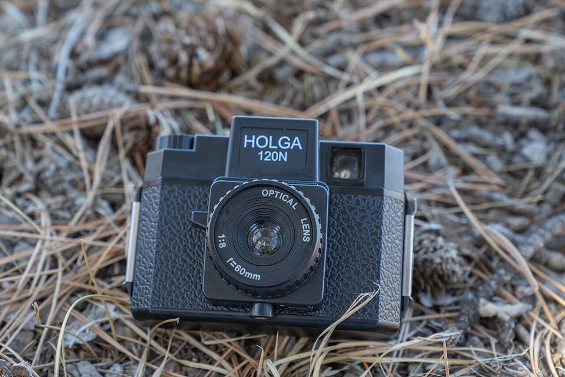
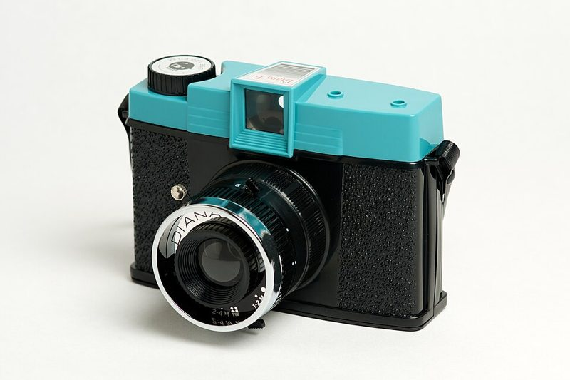
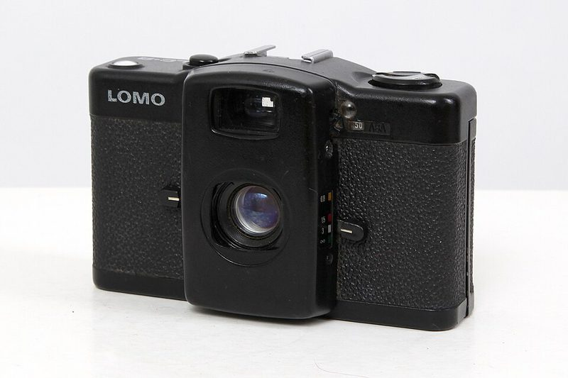

토이 · 일회용 Toy & single-use · 135 / 120
플라스틱 렌즈의 비네팅과 빛샘이 매력. 일회용 카메라는 필름이 미리 들어 있어 통째로 현상소에 맡깁니다.



어떻게 찍히나요
플라스틱 렌즈와 단순한 셔터(대개 1/100초 하나)로 이루어져 조작이 거의 없습니다. 렌즈가 완벽하지 않아 가장자리가 어두워지는 비네팅, 흐릿함, 빛샘이 생기는데 이것이 토이 카메라의 매력입니다. 일회용 카메라는 필름이 미리 들어 있어 다 찍고 통째로 현상소에 맡기면 됩니다.
이런 분께 추천
- 부담 없이 필름을 경험해 보고 싶은 분
- 여행·행사에서 막 찍고 싶은 분
- 완벽하지 않은 우연한 사진을 좋아하는 분
좋은 점과 아쉬운 점
- 좋은 점
- 싸고 우연한 결과
- 아쉬운 점
- 노출 조절이 거의 없음
대표 기종
Holga 120N · Diana F+ · Lomo LC-A · 일회용 카메라
대략적인 가격
2만 ~ 15만 원
어울리는 필름
중고로 살 때 확인할 것
- 일회용은 유통기한이 지난 재고인지 확인
- Holga는 빛샘이 심하면 검은 테이프로 이음새를 막기
- 맑은 날 야외에서 ISO 400 필름이 가장 무난